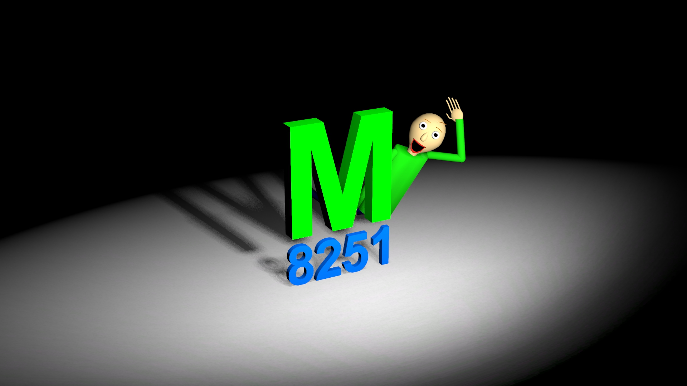

O projektu
Cilj ovog projekta je da pokažem moje znanje o multimedijskim objektima i kako ih koristim za izradu videa i svoj youtube kanal općenito.
Kanal imam već 6 godina i započeo sam sa normalnim gameplay videima koje sam snimao sa programom Bandicam Screen recorder.
U međuvremenu sam napravio svoj vlastiti intro jingle u programu Source FilmMaker ili SFM, koji je namijenjen za izradu 3d animacija sa 3d modelima.
